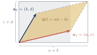
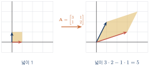
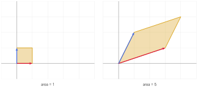
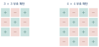
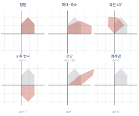
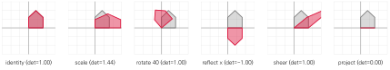
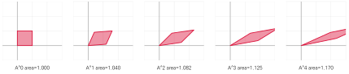
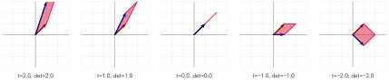
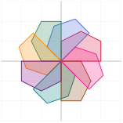
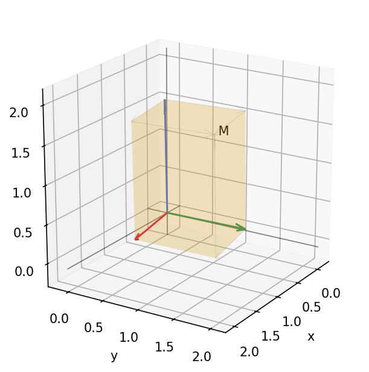

행렬식과 선형변환
이 장을 마치면
6장에서 \(2\times2\) 행렬의 역행렬 공식에 \(ad-bc\)라는 값이 등장했고, 이 값이 0이면 역행렬이 없다는 것을 보았다. 이 값에는 행렬식determinant이라는 이름이 붙어 있다. determinant는 "결정하는 것", "판별하는 것"이라는 뜻인데, 무엇을 판별한다는 말일까? 바로 역행렬의 존재 여부, 나아가 연립방정식이 유일한 해를 갖는지를 판별한다.
그런데 왜 하필 \(ad-bc\)일까? 이 조합이 어디서 왔는지 알면 행렬식은 외워야 할 공식이 아니라 당연한 값이 된다. 답은 넓이에 있다.
7.1 행렬식의 개념: 넓이의 배율
\(ad-bc\)는 평행사변형의 넓이다
\(2\times2\) 행렬 \(\mm{A} = \mtwo{a}{b}{c}{d}\)의 두 열벡터를 \(\vv{a}_1 = (a, c)\), \(\vv{a}_2 = (b, d)\)라 하자. 이 두 벡터가 만드는 평행사변형의 넓이는 얼마일까?
밑변 \(\times\) 높이로 구할 수도 있지만, 다음 그림처럼 큰 직사각형에서 주변 조각들을 덜어 내는 방법이 더 알기 쉽다.

큰 직사각형의 넓이 \((a+b)(c+d)\)에서 네 귀퉁이의 삼각형과 직사각형을 빼면
넓이의 배율로 보기
이제 결정적인 관점 전환이다. 5장에서 배웠듯 \(\mm{A}\)의 두 열은 \(\vv{e}_1\)과 \(\vv{e}_2\)가 옮겨 가는 자리다. 변환 전 두 기저벡터가 만드는 도형은 넓이 1인 단위 정사각형이었고, 변환 후에는 넓이 \(ad-bc\)인 평행사변형이 되었다.
행렬식은 그 변환이 넓이(부피)를 몇 배로 만드는지 알려 주는 값이다.

이 관점에서 보면 6장의 사실이 자명해진다. \(\det(\mm{A}) = 0\)이면 넓이가 0배가 된다는 뜻이고, 넓이가 0이라는 것은 평면이 직선(또는 점)으로 눌렸다는 뜻이다. 눌린 것은 되돌릴 수 없으므로 역행렬이 없다.
import numpy as np
from tuvis import *
A = np.array([[3., 1.],
[1., 2.]])
print('det(A) :', np.linalg.det(A))
fig, (ax1, ax2) = new_axes(xlim=(-1, 5), ylim=(-1, 4), ncols=2)
draw_polygon(ax1, UNIT_SQUARE)
draw_vector(ax1, [1, 0], color='crimson')
draw_vector(ax1, [0, 1], color='royalblue')
ax1.set_title('area = 1')
draw_polygon(ax2, transform(A, UNIT_SQUARE))
draw_vector(ax2, A[:, 0], color='crimson')
draw_vector(ax2, A[:, 1], color='royalblue')
ax2.set_title(f'area = {np.linalg.det(A):.0f}')
fig.show()det(A) : 5.000000000000001
>!

어떤 도형에도 같은 배율이 적용된다
단위 정사각형에만 통하는 이야기가 아니다. 임의의 도형에 대해서도 넓이는 정확히 \(\abs{\det(\mm{A})}\)배가 된다. 몬테카를로 방식으로 확인해 보자.
import numpy as np
from tuvis import *
A = np.array([[3., 1.],
[1., 2.]])
rng = np.random.default_rng(42)
N = 200_000
P = rng.uniform(-1, 1, (N, 2)) # 한 변 2인 정사각형 안의 점들
inside = (P[:, 0] ** 2 + P[:, 1] ** 2) <= 1 # 반지름 1인 원 안의 점만
circle = P[inside]
area_before = np.pi # 원의 넓이
Q = transform(A, circle) # 변환된 타원
# 변환된 도형의 넓이를 다시 몬테카를로로 추정
lo, hi = Q.min(axis=0), Q.max(axis=0)
box_area = np.prod(hi - lo)
area_after = box_area * len(Q) / len(Q) # (근사: 아래 설명 참조)
print('det(A) :', np.linalg.det(A))
print('예상 넓이 :', area_before * abs(np.linalg.det(A)))
print('원의 넓이 x det :', np.pi * 5)det(A) : 5.000000000000001 예상 넓이 : 15.70796326794897 원의 넓이 x det : 15.707963267948966
선형변환은 직선을 직선으로 보내지만, 원은 원으로 보내지 않는다. 원은 타원이 된다. 왜냐하면 방향마다 늘어나는 정도가 다르기 때문이다. 그렇다면 어느 방향으로 얼마나 늘어날까? 이 질문의 완전한 답이 11장의 특이값 분해다. 특이값이 바로 그 늘어나는 비율이고, 모든 특이값의 곱이 곧 \(\abs{\det(\mm{A})}\)가 된다.
행렬식의 부호 — 뒤집혔는가
행렬식은 음수가 될 수도 있다. 넓이가 음수일 수는 없으니, 부호는 다른 정보를 담고 있다. 바로 방향(orientation)이 뒤집혔는지를 알려 준다.
\(\vv{e}_1\)에서 \(\vv{e}_2\)로 가는 방향은 반시계 방향이다. 변환 후에도 \(\mm{A}\vv{e}_1\)에서 \(\mm{A}\vv{e}_2\)로 가는 것이 반시계 방향이면 행렬식이 양수, 시계 방향으로 뒤집혔으면 음수다.

import numpy as np
mats = {
'identity' : np.eye(2),
'rotate 90' : np.array([[0., -1.], [1., 0.]]),
'flip x' : np.array([[1., 0.], [0., -1.]]),
'scale 2' : np.array([[2., 0.], [0., 2.]]),
'shear' : np.array([[1., 2.], [0., 1.]]),
'collapse' : np.array([[1., 2.], [2., 4.]]),
}
for name, M in mats.items():
d = np.linalg.det(M)
note = '뒤집힘' if d < 0 else ('붕괴' if np.isclose(d, 0) else '보존')
print(f'{name:10s}: det = {d:6.2f} ({note})')identity : det = 1.00 (보존) rotate 90 : det = 1.00 (보존) flip x : det = -1.00 (뒤집힘) scale 2 : det = 4.00 (보존) shear : det = 1.00 (보존) collapse : det = 0.00 (붕괴)
흥미로운 사실 두 가지가 보인다. 회전은 행렬식이 1이다. 회전은 넓이를 바꾸지 않기 때문이다. 그리고 전단(shear)도 행렬식이 1이다. 도형을 비스듬히 밀어도 밑변과 높이가 그대로이므로 넓이는 변하지 않는다. 이 두 사실은 그림을 그려 보면 즉시 납득된다.
7.2 행렬식의 계산: 소행렬식과 여인자
\(3\times3\)으로 넘어가기
\(2\times2\)의 행렬식은 \(ad-bc\)였다. 3차원에서는 평행사변형의 넓이가 아니라 평행육면체의 부피가 되지만, 원리는 같다. 문제는 계산 방법이다.
\(3\times3\) 이상의 행렬식을 구하는 표준적인 방법은 한 줄을 골라 그 줄을 따라 전개하는 것이다. 이를 위해 두 가지 개념이 필요하다.
\(\mm{A} \in \Rmat{n}{n}\)에서 \(i\)행과 \(j\)열을 통째로 지워서 얻는 \((n-1)\times(n-1)\) 부분행렬을 \(\mm{M}_{ij}\)라 하자.
\(\mm{M}_{ij}\)의 행렬식 \(\det(\mm{M}_{ij})\)를 성분 \(a_{ij}\)의 소행렬식minor이라 하고, 여기에 위치에 따른 부호를 붙인
부호 \((-1)^{i+j}\)는 체스판 무늬를 만든다. 행과 열의 번호를 더해 짝수면 \(+\), 홀수면 \(-\)다.

여인자 전개
\(\mm{A} \in \Rmat{n}{n}\)의 행렬식은 임의의 한 행(\(i\)행) 또는 한 열(\(j\)열)을 따라 다음과 같이 전개할 수 있다.
\(3\times3\)의 경우 1행을 따라 전개하면 다음과 같다.
\(\mm{A} = \begin{bmatrix} 2&-1&3 \\ 1&4&0 \\ 5&2&-2 \end{bmatrix}\)의 행렬식을 1행을 따라 전개하여 구하시오.
import numpy as np
A = np.array([[2., -1., 3.],
[1., 4., 0.],
[5., 2., -2.]])
print('넘파이 :', np.linalg.det(A))
def minor(A, i, j):
"""i행 j열을 지운 부분행렬"""
return np.delete(np.delete(A, i, axis=0), j, axis=1)
def det_cofactor(A):
"""여인자 전개로 행렬식을 재귀적으로 계산한다."""
n = A.shape[0]
if n == 1:
return A[0, 0]
if n == 2:
return A[0, 0] * A[1, 1] - A[0, 1] * A[1, 0]
total = 0.0
for j in range(n): # 0행을 따라 전개
sign = (-1) ** j
total += sign * A[0, j] * det_cofactor(minor(A, 0, j))
return total
print('직접 구현 :', det_cofactor(A))넘파이 : -72.0 직접 구현 : -72.0
여인자 전개는 교과서용이지 실전용이 아니다. \(n \times n\) 행렬식을 이 방법으로 구하면 연산량이 \(n!\)에 비례한다. \(n=20\)이면 \(20! \approx 2.4\times10^{18}\)번의 곱셈이 필요해 현대 컴퓨터로도 수십 년이 걸린다. 넘파이가 실제로 쓰는 방법은 8장에서 배울 LU 분해이며, 연산량이 \(n^3\)에 비례한다. \(n=20\)이면 8000번이면 끝난다.
import numpy as np
import time
rng = np.random.default_rng(0)
for n in [8, 9, 10]:
A = rng.normal(0, 1, (n, n))
t0 = time.time(); d1 = det_cofactor(A); t1 = time.time() - t0
t0 = time.time(); d2 = np.linalg.det(A); t2 = time.time() - t0
print(f'n={n}: 여인자 {t1:.3f}s, 넘파이 {t2:.6f}s, 같은 값 {np.isclose(d1, d2)}')n=8: 여인자 0.129s, 넘파이 0.000043s, 같은 값 True n=9: 여인자 1.163s, 넘파이 0.000037s, 같은 값 True n=10: 여인자 11.458s, 넘파이 0.000033s, 같은 값 True
\(n\)이 1 늘어날 때마다 시간이 약 10배씩 늘어난다. \(n=15\)면 몇 시간이 걸린다. 좋은 알고리즘의 중요성을 보여 주는 좋은 예다.
계산을 줄이는 요령
여인자 전개의 유일한 장점은 0이 많은 줄을 고르면 계산이 확 줄어든다는 것이다. \(a_{ij} = 0\)이면 그 항은 통째로 사라지기 때문이다.
\(\mm{B} = \begin{bmatrix} 3&0&0&2 \\ 1&5&0&0 \\ 4&2&1&0 \\ 0&1&3&2 \end{bmatrix}\)의 행렬식을 구할 때 어느 줄을 고르는 것이 좋은가?
특별한 경우로, 삼각행렬의 행렬식은 대각성분의 곱이다.
\(\mm{U}\)가 상삼각행렬(또는 하삼각행렬)이면
첫 열을 따라 전개하면 첫 항만 남고, 남은 부분행렬도 다시 삼각행렬이므로 같은 논리가 반복되기 때문이다. 8장에서 가우스 소거법으로 행렬을 삼각행렬로 바꾸는 법을 배우고 나면, "소거해서 삼각행렬로 만든 뒤 대각을 곱한다"는 실용적인 계산법을 얻게 된다. 넘파이가 하는 일도 정확히 이것이다.
import numpy as np
U = np.array([[2., 5., 1., 7.],
[0., 3., 4., 2.],
[0., 0., 7., 6.],
[0., 0., 0., 5.]])
print('대각성분의 곱 :', np.prod(np.diag(U)))
print('넘파이 :', np.linalg.det(U))대각성분의 곱 : 210.0 넘파이 : 209.99999999999994
7.3 행렬식의 성질
성질 목록
\(\mm{A}, \mm{B} \in \Rmat{n}{n}\)이고 \(c\)가 스칼라일 때
목록이 길지만 넓이 배율이라는 하나의 관점으로 대부분 설명된다.
| 성질 | 넓이로 이해하기 |
|---|---|
| (1) | 아무것도 하지 않으면 넓이는 1배 그대로다. |
| (3) | 두 변환을 연달아 적용하면 배율은 곱해진다. 2배 늘린 뒤 3배 늘리면 6배다. |
| (4) | 2차원에서 모든 방향으로 \(c\)배 하면 넓이는 \(c^2\)배가 된다. \(n\)차원이면 \(c^n\)배다. |
| (5) | 5배로 늘렸다면 되돌릴 때는 \(1/5\)배 해야 한다. |
| (6) | 두 축을 맞바꾸면 방향이 뒤집히므로 부호가 바뀐다. |
| (7) | 한 축이 0이면 도형이 납작해져 넓이가 0이다. |
| (8) | 두 축이 겹치면 평행사변형이 선분으로 찌부러진다. |
| (9) | 전단 변환이다. 밑변과 높이가 그대로이므로 넓이가 변하지 않는다. |
(3)의 곱셈 정리는 특히 중요하다. 행렬 곱은 복잡하지만 행렬식은 그냥 곱해진다. 이 단순한 관계 덕분에 여러 성질이 즉시 따라 나온다. 예를 들어 (5)는 \(\det(\mm{A})\det(\mm{A}\inv) = \det(\Id) = 1\)에서 바로 나온다.
\(\det(\mm{A}+\mm{B}) \neq \det(\mm{A}) + \det(\mm{B})\)이다. 곱셈은 잘 분해되지만 덧셈은 전혀 그렇지 않다. 매우 흔한 실수이므로 주의하자.
A = np.array([[1., 0.], [0., 1.]])
B = np.array([[1., 0.], [0., 1.]])
print(np.linalg.det(A + B)) # 4.0
print(np.linalg.det(A) + np.linalg.det(B)) # 2.0import numpy as np
rng = np.random.default_rng(42)
A = rng.normal(0, 1, (4, 4))
B = rng.normal(0, 1, (4, 4))
print('(2) det(A.T) == det(A) :',
np.isclose(np.linalg.det(A.T), np.linalg.det(A)))
print('(3) det(AB) == detA*detB :',
np.isclose(np.linalg.det(A @ B),
np.linalg.det(A) * np.linalg.det(B)))
print('(4) det(3A) == 3^4 detA :',
np.isclose(np.linalg.det(3 * A), 3 ** 4 * np.linalg.det(A)))
print('(5) det(inv A) :',
np.isclose(np.linalg.det(np.linalg.inv(A)), 1 / np.linalg.det(A)))
# (6) 두 행 교환
A2 = A.copy(); A2[[0, 1]] = A2[[1, 0]]
print('(6) 행 교환 시 부호 :',
np.isclose(np.linalg.det(A2), -np.linalg.det(A)))
# (9) 한 행에 다른 행의 상수배 더하기
A3 = A.copy(); A3[2] = A3[2] + 5 * A3[0]
print('(9) 행 연산 후 불변 :',
np.isclose(np.linalg.det(A3), np.linalg.det(A)))(2) det(A.T) == det(A) : True (3) det(AB) == detA*detB : True (4) det(3A) == 3^4 detA : True (5) det(inv A) : True (6) 행 교환 시 부호 : True (9) 행 연산 후 불변 : True
성질 (9)를 눈으로 보기
성질 (9)는 가우스 소거법의 정당성을 뒷받침하는 핵심 성질이므로 그림으로 확인해 두자. 한 열에 다른 열의 상수배를 더하는 것은 전단 변환이며, 평행사변형의 한 변을 다른 변 방향으로 밀어내는 것과 같다. 밑변과 높이가 그대로이므로 넓이는 변하지 않는다.
>!
이 성질이 왜 중요한가? 행렬식을 바꾸지 않으면서 행렬을 삼각행렬로 바꿀 수 있다는 뜻이기 때문이다. 그리고 삼각행렬의 행렬식은 대각성분의 곱이므로 즉시 계산된다. 이것이 실제 컴퓨터가 행렬식을 구하는 방법이다.
import numpy as np
def det_by_elimination(A):
"""행 연산으로 상삼각행렬을 만들어 행렬식을 구한다."""
A = A.astype(float).copy()
n = A.shape[0]
sign = 1.0
for k in range(n):
# 부분 피벗팅: k열에서 절댓값이 가장 큰 행을 위로
p = k + np.argmax(np.abs(A[k:, k]))
if np.isclose(A[p, k], 0):
return 0.0 # 열 전체가 0 -> 특이행렬
if p != k:
A[[k, p]] = A[[p, k]]
sign = -sign # 성질 (6)
for i in range(k + 1, n):
A[i] -= (A[i, k] / A[k, k]) * A[k] # 성질 (9)
return sign * np.prod(np.diag(A))
rng = np.random.default_rng(7)
for n in [3, 5, 8]:
M = rng.normal(0, 1, (n, n))
print(f'n={n}: 소거법 {det_by_elimination(M):10.6f}, '
f'넘파이 {np.linalg.det(M):10.6f}')n=3: 소거법 0.172846, 넘파이 0.172846 n=5: 소거법 -3.357207, 넘파이 -3.357207 n=8: 소거법 -2.638090, 넘파이 -2.638090
이 함수는 여인자 전개와 달리 \(n=1000\)에서도 몇 초면 끝난다. 8장에서 이 소거 과정을 훨씬 자세히 다룬다.
3차원에서 행렬식은 세 열벡터가 만드는 평행육면체의 부피다. 그리고 그 값은 4장에서 배운 외적과 내적으로도 쓸 수 있다.
a = np.array([1., 0., 0.]); b = np.array([0., 2., 0.]); c = np.array([0., 0., 3.])
print(np.linalg.det(np.column_stack([a, b, c]))) # 6.0
print(a @ np.cross(b, c)) # 6.07.4 선형변환과 행렬식
선형변환이란
5장에서 행렬을 "벡터를 벡터로 보내는 함수"로 보았다. 이제 그 함수에 정식 이름을 붙이자.
함수 \(T: \Rsp{n} \to \Rsp{m}\)이 모든 벡터 \(\vv{u}, \vv{v}\)와 스칼라 \(c\)에 대해
이 두 조건을 합쳐 "\(T\)는 선형결합을 보존한다"고 말한다. 즉 먼저 섞어서 변환하나, 변환한 뒤 섞으나 결과가 같다는 뜻이다.
\(T: \Rsp{n} \to \Rsp{m}\)이 선형변환이면, 다음을 만족하는 행렬 \(\mm{A} \in \Rmat{m}{n}\)이 유일하게 존재한다.
증명의 아이디어는 5장에서 이미 보았다. 임의의 \(\vv{x} = x_1\vv{e}_1 + \cdots + x_n\vv{e}_n\)에 대해 선형성을 적용하면
이므로, \(T(\vv{e}_j)\)들을 열로 모아 놓은 행렬이 곧 \(\mm{A}\)다. 선형변환과 행렬은 같은 것의 두 이름이다.
\(T(\vv{x}) = \mm{A}\vv{x} + \vv{b}\)처럼 상수항이 붙으면 선형변환이 아니다. \(T(\zerovec) = \vv{b} \neq \zerovec\)이므로 원점이 움직이기 때문이다. 이런 변환은 아핀변환affine transformation이라 부른다. 컴퓨터 그래픽스에서는 이동(translation)을 다뤄야 하므로 차원을 하나 늘리는 동차좌표 기법을 쓰는데, 13장에서 다룬다.
기본 변환들의 목록
2차원에서 자주 쓰이는 변환들을 행렬로 정리해 두자.
| 변환 | 행렬 | det | 특징 |
|---|---|---|---|
| 항등 | \(\mtwo{1}{0}{0}{1}\) | 1 | 아무것도 안 함 |
| 확대·축소 | \(\mtwo{s_x}{0}{0}{s_y}\) | \(s_xs_y\) | 축마다 다른 배율 |
| 회전 (\(\theta\)) | \(\mtwo{\cos\theta}{-\sin\theta}{\sin\theta}{\cos\theta}\) | 1 | 넓이·길이 보존 |
| \(x\)축 반사 | \(\mtwo{1}{0}{0}{-1}\) | \(-1\) | 방향 뒤집힘 |
| 전단 (가로) | \(\mtwo{1}{k}{0}{1}\) | 1 | 넓이 보존 |
| 정사영 (\(x\)축) | \(\mtwo{1}{0}{0}{0}\) | 0 | 차원 붕괴 |

import numpy as np
from tuvis import *
def rot(deg):
t = np.radians(deg)
return np.array([[np.cos(t), -np.sin(t)],
[np.sin(t), np.cos(t)]])
transforms = {
'identity' : np.eye(2),
'scale' : np.diag([1.8, 0.8]),
'rotate 40' : rot(40),
'reflect x' : np.diag([1., -1.]),
'shear' : np.array([[1., 1.2], [0., 1.]]),
'project' : np.diag([1., 0.]),
}
house = np.array([[0., 0.], [1.6, 0.], [1.6, 1.2], [0.8, 2.], [0., 1.2]])
fig, axes = new_axes(xlim=(-3, 3), ylim=(-3, 3), nrows=2, ncols=3)
for ax, (name, M) in zip(axes.flat, transforms.items()):
draw_polygon(ax, house, color='gray', alpha=0.3)
draw_polygon(ax, transform(M, house), color='crimson', alpha=0.45)
ax.set_title(f'{name} (det={np.linalg.det(M):.2f})', fontsize=10)
fig.show()>!

행렬식으로 변환을 읽어 내기
행렬식 하나로 변환의 성격을 상당 부분 알 수 있다.
| 행렬식 | 변환의 성격 |
|---|---|
| \(\det = 1\) | 넓이와 방향을 모두 보존 (회전, 전단) |
| \(\det = -1\) | 넓이는 보존하되 뒤집음 (반사) |
| \(\abs{\det} > 1\) | 도형이 커진다 |
| \(0 < \abs{\det} < 1\) | 도형이 작아진다 |
| \(\det = 0\) | 차원이 무너진다 (역행렬 없음) |
| \(\det < 0\) | 방향이 뒤집힌다 |
연속 변환에서 넓이의 변화
곱셈 정리 \(\det(\mm{A}\mm{B}) = \det(\mm{A})\det(\mm{B})\)를 그림으로 확인해 보자. 변환을 여러 번 적용할 때 넓이가 어떻게 누적되는지 보는 것이다.
import numpy as np
from tuvis import *
A = np.array([[1.2, 0.4],
[0.1, 0.9]])
print('det(A) :', np.linalg.det(A))
square = UNIT_SQUARE
fig, axes = new_axes(xlim=(-1, 3), ylim=(-1, 3), ncols=5)
P = square.copy()
for k, ax in enumerate(axes):
draw_polygon(ax, P, color='crimson', alpha=0.45)
area = abs(np.linalg.det(A)) ** k
ax.set_title(f'A^{k} area={area:.3f}', fontsize=9)
P = transform(A, P)
# 넓이가 det의 거듭제곱으로 줄어드는지 확인
for k in range(5):
print(f'A^{k}: det = {np.linalg.det(np.linalg.matrix_power(A, k)):.5f},'
f' det(A)^{k} = {np.linalg.det(A) ** k:.5f}')
fig.show()det(A) : 1.04 A^0: det = 1.00000, det(A)^0 = 1.00000 A^1: det = 1.04000, det(A)^1 = 1.04000 A^2: det = 1.08160, det(A)^2 = 1.08160 A^3: det = 1.12486, det(A)^3 = 1.12486 A^4: det = 1.16986, det(A)^4 = 1.16986
>!

행렬식은 이론적으로는 매우 중요하지만, 실무에서 직접 계산할 일은 생각보다 적다. 크기가 큰 행렬에서는 값이 지나치게 커지거나 작아져 부동소수점으로 표현하기 어려워지기 때문이다(\(100\times100\) 행렬의 행렬식은 흔히 \(10^{\pm100}\) 수준이 된다).
그래서 실무에서는 "가역인가"를 판단할 때 행렬식 대신 조건수(np.linalg.cond)나 랭크(np.linalg.matrix_rank)를 쓴다. 그럼에도 행렬식을 배우는 이유는 다음과 같다.
- 고유값을 정의하는 특성방정식 \(\det(\mm{A}-\lambda\Id)=0\)에 등장한다 (9장).
- 다변수 미적분의 변수 변환에서 야코비 행렬식으로 등장한다.
- 확률의 다변량 정규분포 밀도함수에 공분산행렬의 행렬식이 들어간다.
- 컴퓨터 그래픽스에서 삼각형의 앞뒷면 판정에 쓰인다 (부호만 사용).
- 행렬식 = 넓이(부피)의 배율이고, 부호 = 방향의 뒤집힘 여부다.
- \(\det(\mm{A}\mm{B}) = \det(\mm{A})\det(\mm{B})\) — 변환을 이으면 배율이 곱해진다.
- \(\det(\mm{A}) = 0\)은 차원 붕괴를 뜻하고, 이는 곧 역행렬이 없다는 말이다.
- 여인자 전개는 이해를 위한 도구이고, 실제 계산은 소거법으로 삼각행렬을 만든 뒤 대각을 곱한다.
- 선형변환과 행렬은 같은 것이며, 행렬의 열은 \(T(\vv{e}_j)\)다.
- 행렬식이 넓이임을 수치로 확인하자. 무작위 점을 뿌려 변환 전후의 넓이 비율을 몬테카를로로 추정하고 행렬식과 비교하시오.
import numpy as np from tuvis import * def area_by_sampling(poly, n=400_000, seed=0): """다각형 안에 있는 표본점의 비율로 넓이를 추정한다.""" rng = np.random.default_rng(seed) lo, hi = poly.min(axis=0), poly.max(axis=0) P = rng.uniform(lo, hi, (n, 2)) # 볼록다각형 내부 판정: 모든 변에 대해 같은 쪽에 있는가 inside = np.ones(n, dtype=bool) m = len(poly) for k in range(m): e = poly[(k + 1) % m] - poly[k] # 변 벡터 r = P - poly[k] cross = e[0] * r[:, 1] - e[1] * r[:, 0] # 2차원 외적 inside &= (cross >= 0) return np.prod(hi - lo) * inside.mean() A = np.array([[3., 1.], [1., 2.]]) before = area_by_sampling(UNIT_SQUARE) after = area_by_sampling(transform(A, UNIT_SQUARE)) print(f'변환 전 넓이 : {before:.4f}') print(f'변환 후 넓이 : {after:.4f}') print(f'비율 : {after / before:.4f}') print(f'det(A) : {np.linalg.det(A):.4f}')변환 전 넓이 : 1.0000 변환 후 넓이 : 4.9909 비율 : 4.9909 det(A) : 5.0000
- 여인자 전개를 손으로 따라가자. \(3\times3\) 행렬식을 1행 전개와 2열 전개 두 가지로 각각 계산하고 결과가 같은지 확인하시오.
import numpy as np A = np.array([[2., -1., 3.], [1., 4., 0.], [5., 2., -2.]]) def minor(A, i, j): return np.delete(np.delete(A, i, axis=0), j, axis=1) def det2(M): return M[0, 0] * M[1, 1] - M[0, 1] * M[1, 0] row0 = sum((-1) ** j * A[0, j] * det2(minor(A, 0, j)) for j in range(3)) col1 = sum((-1) ** (i + 1) * A[i, 1] * det2(minor(A, i, 1)) for i in range(3)) print('1행 전개 :', row0) print('2열 전개 :', col1) print('넘파이 :', np.linalg.det(A)) - 행렬식이 0이 되는 순간을 관찰하자. 매개변수를 바꿔 가며 행렬식이 0을 지나갈 때 도형이 어떻게 변하는지 그리시오.
import numpy as np from tuvis import * fig, axes = new_axes(xlim=(-3, 3), ylim=(-3, 3), ncols=5) for ax, t in zip(axes, [2.0, 1.0, 0.0, -1.0, -2.0]): A = np.array([[1., 1.], [1., 1. + t]]) draw_polygon(ax, transform(A, UNIT_SQUARE), color='crimson', alpha=0.5) draw_vector(ax, A[:, 0], color='darkred', width=0.015) draw_vector(ax, A[:, 1], color='navy', width=0.015) ax.set_title(f't={t}, det={np.linalg.det(A):.1f}', fontsize=9) fig.show()>!

\(t=0\)일 때 두 열벡터가 완전히 겹쳐 도형이 선분으로 찌부러진다. 그 전후로 행렬식의 부호도 바뀌는데, 이는 두 벡터의 좌우 관계가 뒤바뀌었기 때문이다.
- 회전은 넓이를 바꾸지 않는다. 여러 각도의 회전행렬에 대해 행렬식이 언제나 1인지 확인하고, 도형을 실제로 회전시켜 보시오.
import numpy as np from tuvis import * def rot(deg): t = np.radians(deg) return np.array([[np.cos(t), -np.sin(t)], [np.sin(t), np.cos(t)]]) shape = np.array([[0., 0.], [2., 0.], [2., 1.], [1., 1.5], [0., 1.]]) fig, ax = new_axes(xlim=(-3, 3), ylim=(-3, 3), figsize=(5, 5)) for deg in range(0, 360, 45): draw_polygon(ax, transform(rot(deg), shape), color=PALETTE[(deg // 45) % len(PALETTE)], alpha=0.25) fig.show() print([round(np.linalg.det(rot(d)), 12) for d in range(0, 360, 45)])>!

- \(4\times4\) 이상에서 알고리즘의 차이를 체감하자. 여인자 전개와 소거법의 실행 시간을 비교하시오.
import numpy as np import time def det_cofactor(A): n = A.shape[0] if n == 1: return A[0, 0] if n == 2: return A[0, 0] * A[1, 1] - A[0, 1] * A[1, 0] return sum((-1) ** j * A[0, j] * det_cofactor(np.delete(np.delete(A, 0, 0), j, 1)) for j in range(n)) rng = np.random.default_rng(0) for n in [7, 8, 9]: A = rng.normal(0, 1, (n, n)) t0 = time.time(); det_cofactor(A); tc = time.time() - t0 t0 = time.time(); np.linalg.det(A); tn = time.time() - t0 print(f'n={n}: 여인자 {tc:8.4f}s, 넘파이 {tn:.6f}s, 비율 {tc/tn:.0f}배') - 3차원 부피를 확인하자. 세 벡터가 만드는 평행육면체의 부피를 행렬식과 스칼라 삼중적으로 각각 구하시오.
import numpy as np a = np.array([2., 1., 0.]) b = np.array([0., 3., 1.]) c = np.array([1., 0., 4.]) M = np.column_stack([a, b, c]) print('det :', np.linalg.det(M)) print('삼중적 :', a @ np.cross(b, c)) print('부피(절댓값):', abs(np.linalg.det(M))) # 세 벡터가 한 평면에 있으면 부피는 0 d = a + b # a, b의 조합이므로 같은 평면 print('평면 위 :', np.linalg.det(np.column_stack([a, b, d]))) - 선형성을 확인하는 함수를 만들자. 주어진 함수가 선형변환인지 판정하는 코드를 작성하고 몇 가지 함수를 시험하시오.
import numpy as np def is_linear(f, dim=2, trials=20, seed=0): """f가 선형변환의 두 조건을 만족하는지 무작위로 검사한다.""" rng = np.random.default_rng(seed) for _ in range(trials): u, v = rng.normal(0, 1, (2, dim)) c = rng.normal() if not np.allclose(f(u + v), f(u) + f(v)): return False if not np.allclose(f(c * u), c * f(u)): return False return True A = np.array([[1., 2.], [3., 4.]]) print('행렬 곱 :', is_linear(lambda x: A @ x)) print('상수항 추가 :', is_linear(lambda x: A @ x + np.array([1., 1.]))) print('성분별 제곱 :', is_linear(lambda x: x ** 2)) print('첫 성분만 남기기 :', is_linear(lambda x: np.array([x[0], 0.])))행렬 곱 : True 상수항 추가 : False 성분별 제곱 : False 첫 성분만 남기기 : True
마지막 항목이 흥미롭다. 정보를 버리는 정사영도 엄연한 선형변환이다. 선형성은 "정보를 보존한다"가 아니라 "선형결합을 보존한다"는 뜻임을 확인하자.
- 행렬식이 부피임을 3차원에서 보자. 2차원에서 행렬식은 넓이였다. 3차원에서는 세 열벡터가 만드는 평행육면체의 부피가 된다.
draw_matrix()가 그 육면체를 그려 준다.import numpy as np from tuvis import * M = np.array([[1.2, 0.4, 0.2], [0.3, 1.4, 0.1], [0.1, 0.2, 1.6]]) fig, ax = new_axes3d(xlim=(-0.3, 2.2), ylim=(-0.3, 2.2), zlim=(-0.3, 2.2)) draw_matrix(ax, M, label='M') setCam(ax, (1.67, 1.05, 0.72)) fig.show() print('부피 = |det M| =', round(abs(np.linalg.det(M)), 4))부피 = |det M| = 2.46

세 번째 열의 값을 앞의 두 열의 조합으로 바꿔 보자(예:
M[:, 2] = M[:, 0] + M[:, 1]). 육면체가 납작해져 평면으로 찌부러지고 부피가 0이 된다. "행렬식이 0이면 차원이 무너진다"는 말을 눈으로 보게 되는 순간이다.
7장 요약
- \(2\times2\) 행렬의 행렬식 \(ad-bc\)는 두 열벡터가 만드는 평행사변형의 넓이다. 3차원에서는 세 열벡터가 만드는 평행육면체의 부피가 된다.
- 행렬식은 그 변환이 넓이(부피)를 몇 배로 만드는지 알려 준다. 변환 후 넓이 \(= \abs{\det(\mm{A})} \times\) 변환 전 넓이이며, 이 배율은 단위 정사각형뿐 아니라 어떤 도형에도 적용된다.
- 행렬식의 부호는 방향(orientation)의 뒤집힘을 나타낸다. 양수면 방향 보존, 음수면 뒤집힘이다.
- \(\det(\mm{A}) = 0\)은 넓이가 0이 되었다는 뜻, 즉 차원이 무너졌다는 뜻이며 이는 곧 역행렬이 없다는 말과 같다.
- \(i\)행 \(j\)열을 지운 부분행렬의 행렬식을 소행렬식, 여기에 \((-1)^{i+j}\)를 곱한 것을 여인자라 한다. 부호는 체스판 무늬를 이룬다.
- 여인자 전개로 임의의 행을 따라 \(\det(\mm{A}) = \sum_j a_{ij}C_{ij}\)로 계산할 수 있다. 어느 줄을 골라도 결과는 같으므로 0이 많은 줄을 고르는 것이 유리하다.
- 여인자 전개는 연산량이 \(n!\)에 비례해 실용적이지 않다. 실제 계산은 소거법으로 삼각행렬을 만든 뒤 대각성분을 곱하며, 연산량은 \(n^3\)에 비례한다.
- 삼각행렬(대각행렬 포함)의 행렬식은 대각성분의 곱이다.
- 행렬식의 주요 성질: \(\det(\Id)=1\), \(\det(\mm{A}\tp)=\det(\mm{A})\), \(\det(\mm{A}\mm{B})=\det(\mm{A})\det(\mm{B})\), \(\det(c\mm{A})=c^n\det(\mm{A})\), \(\det(\mm{A}\inv)=1/\det(\mm{A})\).
- 행 연산과 행렬식: 두 행을 교환하면 부호가 바뀌고, 한 행에 다른 행의 상수배를 더하면 행렬식이 변하지 않는다(전단이므로 넓이 불변). 후자가 소거법으로 행렬식을 구할 수 있는 근거다.
- \(\det(\mm{A}+\mm{B}) \neq \det(\mm{A})+\det(\mm{B})\)임에 주의하자. 곱셈은 분해되지만 덧셈은 그렇지 않다.
- 선형변환은 \(T(\vv{u}+\vv{v})=T(\vv{u})+T(\vv{v})\)와 \(T(c\vv{u})=cT(\vv{u})\)를 만족하는 함수다. 모든 선형변환은 행렬로 표현되며, 그 행렬의 \(j\)번째 열이 \(T(\vv{e}_j)\)다. 선형변환과 행렬은 같은 것이다.
- \(T(\vv{x}) = \mm{A}\vv{x}+\vv{b}\)는 원점을 움직이므로 선형변환이 아니라 아핀변환이다.
- 기본 변환의 행렬식: 회전과 전단은 1(넓이·방향 보존), 반사는 \(-1\)(방향 뒤집힘), 정사영은 0(차원 붕괴), 확대·축소는 \(s_xs_y\)다.
- 실무에서는 크기가 큰 행렬의 행렬식이 지나치게 커지거나 작아지므로, 가역성 판단에는 조건수나 랭크를 쓴다. 그럼에도 행렬식은 고유값의 정의(9장), 야코비 행렬식, 다변량 정규분포 등에서 필수적이다.
7장 연습문제
- ★ 다음 행렬의 행렬식을 손으로 구하시오.
- \(\mtwo{5}{3}{2}{4}\) (2) \(\mtwo{-1}{2}{3}{-6}\) (3) \(\begin{bmatrix}1&0&2\\3&1&0\\0&2&1\end{bmatrix}\)
- ★ 행렬식이 넓이의 배율이라는 관점에서, 다음 변환이 도형의 넓이를 몇 배로 만드는지 답하시오.
- 모든 방향으로 3배 확대 (2차원)
- 모든 방향으로 3배 확대 (3차원)
- 60도 회전
- \(x\)축에 대한 반사
- ★★ \(\det(\mm{A}) = 4\), \(\det(\mm{B}) = -2\)이고 두 행렬이 \(3\times3\)일 때 다음을 구하시오.
- \(\det(\mm{A}\mm{B})\) (2) \(\det(2\mm{A})\) (3) \(\det(\mm{A}\inv)\) (4) \(\det(\mm{A}\tp\mm{B})\)
- ★★ 다음 \(4\times4\) 행렬의 행렬식을 계산이 가장 적은 줄을 골라 전개하여 구하시오.
\[ \begin{bmatrix} 2&0&0&1 \\ 3&1&0&0 \\ 0&4&2&0 \\ 5&0&0&3 \end{bmatrix} \]
- ★★ 어떤 \(3\times3\) 행렬의 2행과 3행을 교환한 뒤 1행에 2행의 5배를 더했다. 원래 행렬식이 \(-6\)이었다면 최종 행렬식은 얼마인가?
- ★★ 다음 행렬 중 특이행렬을 모두 고르고, 어느 성질을 이용하면 계산 없이 알 수 있는지 설명하시오.
- 한 행이 모두 0인 행렬
- 두 열이 완전히 같은 행렬
- 세 번째 행이 첫 행과 둘째 행의 합인 행렬
- 대각성분 중 하나가 0인 삼각행렬
- ★★ \(\det(\mm{A}+\mm{B}) = \det(\mm{A}) + \det(\mm{B})\)가 성립하지 않는 반례를 하나 만드시오.
- ★★★ 여인자 전개를 재귀로 구현하고, \(n=3,\ldots,9\)에 대해 실행 시간을 측정하여 그래프로 그리시오. 시간이 \(n!\)에 비례하는지 확인하시오.
- ★★★ 매개변수 \(t\)에 대해 \(\mm{A}(t) = \mtwo{2}{t}{t}{2}\)의 행렬식을 \(t\)의 함수로 구하고, \(t \in [-4, 4]\)에서 그래프로 그리시오. 행렬식이 0이 되는 \(t\)의 값에서 도형이 어떻게 되는지 그림으로 확인하시오.
- ★★★ 무작위 볼록다각형을 하나 만들고, 임의의 행렬 \(\mm{A}\)로 변환한 뒤 넓이를 몬테카를로로 추정하시오. 넓이의 비율이 \(\abs{\det(\mm{A})}\)와 일치하는지 확인하시오.
- ★★ 다음 함수가 선형변환인지 판정하고 이유를 쓰시오.
- \(T(x, y) = (2x - y,\ x + 3y)\)
- \(T(x, y) = (x + 1,\ y)\)
- \(T(x, y) = (xy,\ x)\)
- \(T(x, y) = (0,\ 0)\)
- ★★★ 선형변환 \(T\)가 \(T(1,0) = (3,1)\), \(T(0,1) = (-1,2)\)를 만족할 때 \(T\)의 행렬을 구하고, \(T(2,-3)\)을 계산하시오. 또 이 변환의 행렬식과 그 기하적 의미를 서술하시오.
- ★★★ 세 점 \(A(1,2)\), \(B(4,3)\), \(C(2,6)\)이 이루는 삼각형의 넓이를 행렬식으로 구하시오. (힌트: 두 변 벡터가 만드는 평행사변형 넓이의 절반)
- ★★★ 3차원 회전행렬(임의의 축에 대한)의 행렬식이 항상 1임을 확인하는 코드를 작성하시오. 반사가 포함된 변환은 \(-1\)이 나오는 것도 함께 보이시오.